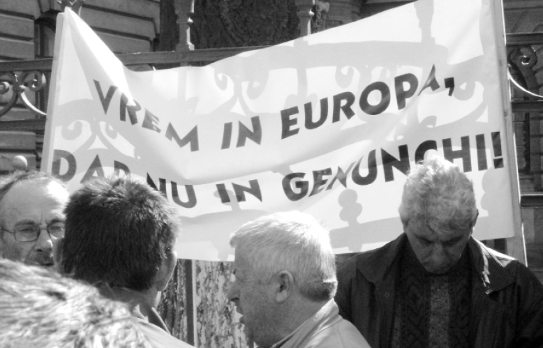

AGRICULTURA. Mediul rural. cultivarea pământului. Țăranul. Animalele. Despre cooperativizarea României — Uniunea Europeană
Integrarea în Uniunea Europeană a României înseamnă, printre altele, „armonizarea legislației românești cu aceea europeană” privitoare la agricultură și creșterea animalelor.
Urmărind desfășurarea disputelor sterile referitoare la ministrul și ministerul agriculturii, fără nici o referire la realitatea în agricultură sau la consecințele reale ale aplicării ordinelor europene; luând la cunoștință despre aceste legi europene,
Se poate observa că legile europene privitoare la agricultură și creșterea animalelor au ca scop desființarea agriculturii românești și a țărănimii, atit cît au mai rămas acestea după cei aproape cincizeci de ani de comunism, care a urmărit același lucru.
Astfel, hotărârile de guvern, legile și regulamentele agro-zootehnice de azi „transpun [adică copiază cuvânt cu cuvânt] în legislația națională [s.n.]” nenumărate legi și regulamente străine, ce alcătuiesc „un sistem de supraveghere și control” care îngrădește libertatea țăranilor de a cultiva ceea ce vor (de pildă, viță de vie hibrid), de a cumpăra, a crește, a sacrifica animale, a vinde carne și produse animale așa cum știe el dintotdeauna, ș.a.m.d, Iar nerespectarea legilor de fier ale Europei „libere” se pedepsește cu amenzi de mii de RON-i, pe care e limpede că țăranul nu va avea de unde să le plătească. Și atunci el va lăsa și cultivarea pământului, și creșterea animalelor, și se va duce argat în Europa mare, aceasta fiind chiar ținta legilor de care vorbim! Urmarea e ușor de bănuit.
Astfel, se poate considera că înstrăinarea pământului și a animalelor, care vor intra în grija unor C.A.P-uri mai mult sau mai puțin europene, va duce la pierderea cu desăvârșire a libertății noastre de a ne hrăni și a exista autonom.
Cu alte cuvinte, vom pierde și ultima libertate, așteptând să ne hrănească Europa, cu ce va vrea ea, când și dacă va vrea. Acesta e sfârșitul oricărui război în care ești cotropit de năvălitor, dezastru necunoscut până acum în istoria noastră atât de tulburată.
Generalități:
- agricultura a fost și este privită de mai bine de două secole drept o activitate cu strictă finalitate economică;
- agricultura este mai mult decât atât: ea este parte componentă a unui mod de viață;
- în zilele noastre agricultura trebuie să redevină un mod de viață dar și să recreeze temelia sănătății națiunii noastre printr-o bază de materii prime necontaminate chimic și netransformate genetic.
Premize:
- agricultura românească este sub tutela unor organizații străine, care tinde să transforme țăranul în fermier, fermierul în pauper și apoi să-l desțelenească. Aceste organizații controlează ce, cât și cum se produce în aceasta țară;
- modelul occidental de a comasa terenuri, de a crea mari ferme agricole, exploatații agricole, al căror singur scop, aparent, este profitul, nu este util nației noastre din cel puțin două pricini:
- prima ar fi că de fapt prin aceste mari exploatații agricole se realizează desființarea gospodăriei țărănești, autarhice, deci se desființează în primul rând o clasa de oameni liberi, țăranii. Nu există oameni liberi fără proprietatea unor bunuri care pot produce la rândul lor alte bunuri. Nu există țărani fără pământ.
- a doua consecință la fel de tragică este că agricultura pusă în regim concurențial, ne protejată vamal, tinde să producă cu orice chip produse ieftine. Acest lucru se întâmplă în primul rând prin sporirea producției folosind soiuri selecționate în acest scop, super productive, dar foarte sensibile. La toate acestea se adaugă și nevoia de a îngrășa artificial pământul, lucru care conduce la o super chimizare a produsului final, cu consecințe îngrozitoare asupra sănătății noastre.
- bineînțeles, criticii noștri ne vor spune ca agricultura noastră primește o mulțime de bani de la U.E. Așa este, agricultura primeșște o mulțime de bani, dar astăzi nu țăranul român este proprietarul terenurilor ci italianul, neamțul, etc., care le-a cumpărat. Deci cine primește bani europeni?
Obiective:
- indiferent de angajamentele statului român, reprezentat prin niște personaje nelegitime și străine de interesele țării, agricultura românească trebuie scoasă de sub turela altor organizații, străine de interesele neamului nostru. A ne asuma aceste obligații însemnă să facem un gest stupid - cavaleresc într-o lume lipsită de bun simț și onoare;
- trebuie luate măsuri graduale, dar pe întreg teritoriul, ca măsura unitară, de interzicere a utilizării îngrășămintelor chimice, ierbicidelor și în final insecticidelor. În centre specializate, atent controlate de stat pot fi menținute în rezervă o cantitate de insecticide, fungicide, etc, în scopul combaterii unor dăunători ce amenință cu extinderea rapidă, sub rezerva folosirii lor numai pentru o producție care ulterior va & distrusă sau exportată;
- soiurile modificate genetic trebuie interzise;
- ca principiu general trebuie optimizat efortul administrativ care îndrumă această activitate, astfel impunerea țăranului nu se va face calculând un impozit după numărul de găini și de porci din curte, ci impunând direct și o singură dată sursa efectivă de venit: pământul;
- în scopul revigorării acestei clase de oameni liberi, statul trebuie să i-a măsura protecției și încurajării activității agricole, astfel familiile tinere până în limita unei suprafețe de teren pot fi scutite de la plata impozitului;
- este necesar ca statul, prin însăși clasa de țărani să ia măsura refacerii fondului forestier, scutind de la plata impozitului acele suprafețe care sunt împădurire;
- de asemenea ca principiu administrativ coerent impunerile și scutirile trebuie făcute publice la sediul administrație locale.
Consecințe:
- acest lucru va permite în timp ca terenurile să-și recapete fertilitatea naturală, apoi produsele obținute pe aceste terenuri vor avea în câțiva ani calitățile unei producții așa zis ecologice;
- o atare situație va permite României să hrănească în mod corect populația și excedentul ușor previzibil va permite transformarea acestor produse într-o marfă ușor vandabilă pe orice piață;
- acest lucru coroborat cu o protecție vamală corectă față de producătorul dar și față de consumatorul din România va conduce la eliminarea veșnicei și interminabilei probleme a subvenției în agricultură. Agricultura ecologică nu trebuie subvenționată, ea poate trăi singură, dacă nu este subminată de stat printr-o politică vamală incorectă și prin punerea ei în concurență cu agricultura super-chimizată;
- de asemenea aceste măsuri vor conduce la lichidarea marii proprietăți funciare, în măsura în care statul român va controla cu atenție numărul muncitorilor străini angajați în agricultură. Nu vedem pe nici un italian sau neam dornic să prășească porumbul. Astfel, mare parte din terenurile realmente furate țăranilor de statul român și străinii latifundiari se vor întoarce la cei ce doresc să le lucreze ca agricultori. Marile proprietăți trebuie lichidate și prin măsuri de organizare juridică și impunere specială, marii propietari de teren trebuie obligați să se organizeze juridic, să vândă produsele lor cu TVA, iar suprafețele mari de teren pot suferi impuneri progresive;
- o sursă suplimentară de câștig, de neneglijat, o reprezintă în aceste condiții turismul care poate dobândi o platformă excelentă în acest fel;
- dar cel mai important lucru, în zece, douăzeci de ani România poate avea din nou țărani, oameni liberi, teren curat, producții agricole de calitate, o populație sănătoasă, turism de toate felurile și tradiții.
Notă:
Pentru cei ce nu cunosc subiectul prea bine o să le dăm niște cifre. Germania a avut la sfârșitul celui de al doilea război mondial gospodării mici cu suprafețe reduse de teren. Cincizeci de ani mai târziu aceste ferme au devenit de 20-30 de hectare, dar un milion și jumătate de gospodării agricole au dispărut. În SUA, 2% din populație este ocupată în agricultură. Gospodăriile care au mai puțin de 100 de hectare nu sunt rentabile. În România, 50% din populația țării locuiește în zone rurale și într-un fel sau altul este ocupată în agricultură. Deci la noi încă se mai poate.

Comentarii